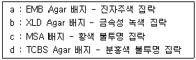

식품산업기사 (2016-05-08 기출문제)
1과목: 식품위생학
1. 방사선 조사에 의한 식품 보존의 특징에 대한 설명으로 옳은 것은?
- 대상식품의 온도 상승을 초래하는 단점이 있다.
- 대량 처리가 불가능 하다.
- 상업적 살균을 목적으로 사용된다.
- 침투성이 강하므로 용기 속에 밀봉된 식품을 조사시킬 수 있다.
(정답률: 82%)

2. 살모넬라균 식중독에 대한 설명을 틀린 것은?
- 달걀, 어육, 연제품 등 광범위한 식품이 오염원이 된다.
- 조리·가공 단계에서 오염이 증폭되어 대규모 사건이 발생하기도 한다.
- 애완동물에 의한 2차 오염은 발생하지 않으므로 식품에 대한 위생 관리로 예방할 수 있다.
- 보균자에 의한 식품오염도 주의를 하여야 한다.
(정답률: 91%)
3. 그람음성의 무아포간균으로서 유당을 분해하여 산과 가스를 생산하며, 식품위생검사와 가장 밀접한 관계가 있는 것은?
- 대장균군
- 젖산균
- 초산균
- 발효균
(정답률: 86%)
4. 중요관리점(CCP)의 결정도에 대한 설명으로 옳은 것은?
- 확인된 위해요소를 관리하기 위한 선생요건이 있으며 잘 관리되고 있는가 - (예) - CCP 맞음
- 확인된 위해요소의 오염이 허용수준을 초과하는가 또는 허용할 수 없는 수준으로 증가하는가 -（아니요） - CCP 맞음
- 확인된 위해요소를 제거하거나 또는 그 발생을 허용수준으로 감소 시킬수 있는 이후의 공정이 있는가 -（예）- CCP 맞음
- 해당공정(단계)에서 안전성을 위한 관리가 필요한가 - ( 아니요 ) - CCP 아님
(정답률: 67%)
5. 다음 중 나머지 셋과 식중독 발생 기작이 다른 미생물은?
- Salmonella enteritidis
- staphylococcus aureus
- Bacillus cereus
- Clostridium botulinum
(정답률: 62%)
6. 다음 통조림 식품 중 납과 주석이 용출되어 내용 식품을 오염시킬 우려가 가장 큰 것은?
- 어육
- 식육
- 과실
- 연유
(정답률: 86%)
7. 배지의 멸균 방법으로 가장 적합한 것은?
- 화염멸균법
- 간헐멸균법
- 고압증기멸균법
- 열탕소독법
(정답률: 86%)
8. 식품의 변질을 방지하기 위한 방법 중 상압건조가 아닌 것은?
- 열풍 건조법
- 배건법
- 진공동결건조법
- 분무건조법
(정답률: 50%)
9. 인수공통감염병으로서 동물에게는 유산을 일으키며, 사람에게는 열성질환을 일으키는 것은?
- 돈단독
- Q혈
- 파상열
- 탄저
(정답률: 84%)
10. 식품위생검사 시 생균수를 측정하는 데 사용되는 것은?
- 표준한천평판배양기
- 젖당부용발효관
- BGLB 발효관
- SS 한천배양기
(정답률: 92%)
11. 포르말린이 용출될 우려가 없는 플라스틱은?
- 멜라민 수지
- 염화비닐 수지
- 요소수지
- 페닐수지
(정답률: 68%)
12. CI.botulinum에 의해 생성되는 독소의 특성과 가장 거리가 먼 것은?
- 단순단백질
- 강한 열저항성
- 수용성
- 신경독소
(정답률: 64%)
13. 식품의 기준 및 규격에 의거하여 멜라민 불검출 대상식품이 아닌 것은?
- 영·유아용 곡류조제식
- 조제우유
- 특수의료용도등식품
- 체중조절용 조제식품
(정답률: 75%)
14. 일본에서 발생한 미강유오염사고의 원인물질로 피부발전, 관절통 등의 증상을 수반하는 것은?
- PCB
- 페놀
- 다이옥신
- 메탄올
(정답률: 87%)
15. 작물의 재배 수확 후 27℃, 습도 82%, 기질의 수분함량 15% 정도로 보관하였더니 곰팡이가 발생되었다. 의심되는 곰팡이 속과 발생 가능한 독소를 바르게 나열한 것은?
- Fusarium 속 Patulin
- Penicillium 속, T-2 Toxin
- Aspergillus 속, Zearalenone
- Aspergillus 속, Aflatoxin
(정답률: 82%)
16. 아니사키스(Anisakis) 기생충에 대한 설명으로 틀린 것은?
- 새우,대구,고래 등이 숙주이다.
- 유충은 내열성이 약하여 열처리로 예방할 수 있다.
- 냉동 처리 및 보관으로는 예방이 불가능 하다.
- 주로 소화관에 궤양, 조양, 봉와직염을 일으킨다.
(정답률: 79%)
17. 유통기한 설정실험 지표의 연결이 틀린 것은?
- 빵 또는 떡류 - 산가(유탕처리 식품)
- 잼류 -세균수
- 시리얼류 - 수분
- 엿류 - TBA가
(정답률: 65%)
18. 완전히 익히지 않은 닭고기 섭취로 감염될 수 있는 기생충은?
- 구충
- Mansoni 열두조충
- 선모충
- 횡천흡충
(정답률: 70%)
19. 다음 중 채소매개 기생충이 아닌 것은?
- 동양모양선충
- 편충
- 톡소플라스마
- 여충
(정답률: 75%)
20. 단백질 식품의 부패생성물이 아닌 것은?
- 황화수소
- 암모니아
- 글리코겐
- 메탄
(정답률: 77%)
2과목: 식품화학
21. 식품의 텍스쳐(texture)를 나타내는 변수와 가장 관계가 적은 것은?
- 경도
- 굴절률
- 탄성
- 부착성
(정답률: 79%)
22. 다음 중 불포화 지방산은?
- oleic acid
- lauric acid
- stearic acid
- palmitic acid
(정답률: 72%)
23. 달걀의 난황 색소가 아닌 것은?
- lutein
- astacin
- zeaxanthin
- cryptoxanthin
(정답률: 62%)
24. 전분질 식품을 볶거나 구울 때 일어나는 현상은?
- 호화현상
- 호정화 현상
- 노화현상
- 유화현상
(정답률: 79%)
25. 젤(gel)화된 콜로이드 식품은?
- 전분액
- 우유
- 삶은 달걀(반고체)
- 된장국
(정답률: 81%)
26. 우유가 알칼리성 식품에 속하는 것은 무슨 영양소 때문인가?
- 지방
- 단백질
- 칼슘
- 비타민 A
(정답률: 82%)
27. 비뉴턴유체 중전단응력이 증가함에 따라 전단속도가 급증하는 현상을 보이는 유체는?
- 가소성 유체
- 의사가소성 유체
- 딜라탄트 유체
- 의액성
(정답률: 70%)
28. 클로로필 색소는 산과 반응하게 되면 어떻게 변하는가?(문제 오류로 2, 3번 보기가 같습니다. 정확한 내용을 아시는분 께서는 오류 신고를 통하여 내용 작성 부탁 드립니다. 정답은 1번 입니다.)(오류 신고가 접수된 문제입니다. 반드시 정답과 해설을 확인하시기 바랍니다.)
- 갈색의 Pheophytn을 생성한다.
- 청녹색의 chlorophylide를 생성한다.
- 청녹색의 chlorophylide을 생성한다.
- 갈색의 phytol을 생성한다.
(정답률: 78%)
29. 천연계 색소 중 당근, 토마토, 새우 등에 주로 들어 있는 것은?
- 카로티노이드(carotenoids)
- 플라보노이드(flavonids)
- 엽록소(chlorophylls)
- 베타레인(betalain)
(정답률: 87%)
30. 토마토 적색색소의 주성분은?
- 라이코펜(lycopene)
- 베타-카로틴(β-carotene)
- 아스타크산틴(astaxanthin)
- 안토시아닌(anthocyanin)
(정답률: 81%)
31. 빵이나 비스킷 등을 가열 시 갈변이 되는 현상은?
- 마이야르 반응 단독으로
- 효소에 의한 갈색화 반응으로
- 마이야르 반응과 캐러멜화 반응이 동시에 일어나서
- 아스코르빈산의 산화반응에 의해서
(정답률: 79%)
32. 과채류의 절단시 갈변되는 현상과 가장 관련이 적은 것은?
- polyphenol류의 산화
- tyrosine의 산화
- 탄닌 성분의 변화
- 유기산의 변화
(정답률: 39%)
33. H2SO4 9.8을 물에 녹여 최종부피는 250ml로 정용하였다면 이 용액의 노르말 농도는?
- 0.6N
- 0.8N
- 1.0N
- 1.2N
(정답률: 58%)
34. 관능적 특성이 측정 요소들 중 반응척도가 갖추어야 할 요건이 아닌 것은?
- 단순해야 한다.
- 편파적이지 않고, 공평해야 한다.
- 관련성이 있어야 한다.
- 차이를 감지할 수 없어야 한다.
(정답률: 92%)
35. 복합지질이 아닌 것은?
- 인지질
- 당지질
- 유도지질
- 스핑고 지질
(정답률: 51%)
36. 고춧가루의 붉은 색을 오랫동안 선명하게 유지하는 방법이 아닌 것은?
- 비타민C와 같은 항산화제를 첨가한다.
- 진공포장하여 저장한다.
- 밀봉하여 냉장고의 냉동실에 보관한다.
- 햇빛을 이용하여 건조시킨다.
(정답률: 74%)
37. 다음 중 필수 아미노산이 아닌 것은?
- lysine
- phenylalanine
- valine
- alanine
(정답률: 63%)
38. 해초에서 추출되는 검(gum)질이 아닌 것은?
- 한천
- 알긴산
- 리그닌
- 카라기난
(정답률: 57%)
39. 맛에 대한 설명 중 옳은 것은?
- 글루타민산 소다에 소량의 핵산계 조미료를 가하면 감칠맛이 강해진다.
- 설탕용액에 소금을 약간 가하면 단맛이 약해진다.
- 커피의 쓴맛은 설탕을 가하면 강해진다.
- 오렌지쥬스에 설탕을 가하면 신맛이 강해진다.
(정답률: 75%)
40. 다음 관능검사 중 가장 주관적인 검사는?
- 차이검사
- 묘사 검사
- 기호도 검사
- 삼점 검사
(정답률: 87%)
3과목: 식품가공학
41. 후숙 과정 중 호흡상승을 보이지 않는 것은?
- 사과
- 바나나
- 토마토
- 밀감
(정답률: 73%)
42. 건강기능식품과 관련하여 건강문제와 기능성 원료의 연결이 틀린 것은?
- 눈 건강 저하 - 녹차 추출물
- 뼈 관절 약화 - 글루코사민
- 칼슘 흡수 저하 - 액상프락토올리고당
- 피부 노화 - 히알우론산나트륨
(정답률: 65%)
43. 두부의 종류에 대한 설명으로 옳은 것은?
- 전두부 - 10배 정도의 물을 사용하며 응고제를 넣고 단백질을 엉기게 한 다음 탈수, 성형하여 만든다.
- 자루두부 - 보통 두부와 동일한 제조공정을 거치며 응고제를 첨가하지 않고 자루에 넣어서 만든다,
- 인스턴트 두부 - 분말두유로 만들며, 물을 첨가하지 않고 바로 먹을수 있다.
- 유바 - 진한 두유를 가열하면 막이 형성되는데 , 계속 가열하여 두꺼워진 막을 걷어 내어 건조한 것이다.
(정답률: 61%)
44. 버터 제조 시 크림의 중화작업에서 산도 0.30%인 크림 100kg을 산도 0.20%로 만들고자 할 때 필요한 소석회의 양은? (단, 젖산의 분자량 90,소석회의 분자량은 74, 소석회 1분자량은 젖산 2분자량과 중화 반응한다.)
- 약 71g
- 약 62g
- 약 52g
- 약 41g
(정답률: 32%)
45. 밀가루 3kg을 사용하여 건조글루텐(건부량) 410g을 제조할 때 건조글루텐 함량, 밀가루의 종류, 주요 용도의 연결이 옳은 것은?
- 7.3% - 중력분 - 스파게티
- 7.3% - 중력분 - 국수
- 13.7% - 강력분 - 식빵
- 13.7% - 강력분 - 비스킷
(정답률: 64%)
46. 우리나라에서 이용하는 식물성 유지 자원과 거리가 먼 것은?
- 밀겨
- 쌀겨
- 유채
- 참깨
(정답률: 71%)
47. 청국장 발효와 가장 관계 깊은 미생물은?
- Aspergillus oryzae
- Lactobacillus bulgaricus
- Saccharomyces cerevisiae
- Bacillus subtilis
(정답률: 57%)
48. 자연치즈의 가공기준이 잘못된 것은? (단, 개별 인정 치즈는 예외)
- 유산균 접종 시 이종 미생물에 2차 오염이 되지 않도록 하고, 산도 및 시간 관리를 철저히 하여야 한다.
- 발효 또는 숙성 시에는 표면에 유해미생물이 오염되지 않도록 숙성실의 온도 및 습도관리를 철저히 하여야 한다.
- 치즈용 원유 및 유가공품은 63~65℃에서 30 분간, 72~75℃에서 15초간 이상 또는 이와 동등이상의 효력을 가지는 방법으로 살균하여야 한다.
- 데히드로초산, 소르빈산, 스르빈산칼륨, 소르빈산칼슘, 피료피온산, 프로피온산칼슘, 프로피온산나트륨 이외의 보존료가 검출되어서는 아니된다.
(정답률: 71%)
49. 마요네즈 제조 시 사용되는 난황의 역할은?
- 발표제
- 유화제
- 응고제
- 팽창제
(정답률: 90%)
50. 다음 식용유지 중 대표적인 경화유는?
- 참기름
- 대두유
- 면실유
- 쇼트닝
(정답률: 69%)
51. 신선란의 특징이 아닌 것은?
- 까실까실한 표면 감촉을 느낄수록 신선한 편이다.
- 8%(4% W/V) 식염수에 넣었을 때 위로 떠오른다.
- 난황계수가 0.36~0.44 정도이다.
- 보통 HU값이 85 이상이다.
(정답률: 76%)
52. 시유 제조 공정 중 크림층의 형성을 방지하고, 지방구를 세분화시켜 소화율을 높이고, 우유 단백질을 연성화하는 목적으로 하는 공정은?
- 표준화
- 연압
- 균질화
- 살균
(정답률: 82%)
53. 배아미에 대한 설명으로 틀린 것은?
- 단백질, 비타민이 비교적 많다.
- 원통마찰식 도정기를 사용한다.
- 맛이 있는 정미를 얻을 수 있다.
- 저장성이 높다.
(정답률: 62%)
54. 두부 제조에 사용되는 응고제로 사용하는 물질이 아닌 것은?
- 글루코노델타락톤
- 탄산칼슘
- 염화칼슘
- 황산칼슘
(정답률: 60%)
55. 피클 발효에 관여하는 유해 미생물 중 산막효모에 대한 설명이 아닌 것은?
- 표면에 피막을 형성한다.
- 이산화탄소를 생산하여 부풀음을 초래한다.
- 호기성 효모이다.
- 젖산을 소비하여 부패 세균이 증식할 수 있는 환경을 만든다.
(정답률: 51%)
56. 침채류의 제조원리가 아닌 것은?
- 담금 직후 가장 많은 미생물이 그람음성 호기성 세균 들이 김치가 익어가며 증가한다.
- 젖산균과 효모가 증식할 정도의 소금을 가한다.
- 채소류 중의 당을 유기산, 에틸알코올, 이산화 탄소 등으로 전환한다.
- 향신료의 향미가 조화롭게 된다.
(정답률: 52%)
57. 유통기한의 설정을 위한 고려사항과 거리가 먼 것은?
- 포장재질
- 보존조건
- 원류의 생산지
- 유통실정
(정답률: 82%)
58. 육가공에서 훈연과 기능이 아닌 것은?
- 독특한 풍미를 부여한다.
- 저장성이 향상된다.
- 수분을 감소시킨다.
- 미생물의 생육을 향상시킨다.
(정답률: 81%)
59. 가축의 사후경직 현상에 해당되지 않는 것은?
- 근육이 굳어져 수축, 경화된다.
- 고기의 PH가 낮아진다.
- 젖산이 생성된다.
- 단백질의 가수분해 현상인 자기소화가 나타난다.
(정답률: 58%)
60. 우유의 균질화 목적이 아닌 것은?
- 지방의 분리 방지
- 커드의 연화
- 미생물의 발육 억제
- 지방구의 미세화
(정답률: 73%)
4과목: 식품미생물학
61. 우유 중의 세균 오염도를 간접적으로 측정하는데 주로 사용하는 방법으로 생균수가 많을수록 탈수소능력이 강해지는 성질을 이용하는 것은?
- 산도 시험
- 알코올침전 시험
- 포스포타아제 시험
- 메틸렌블루 환원 시험
(정답률: 62%)
62. 리파아제 생성력이 있어서 버터와 마가린의 부패에 관여하는 것은?
- Candida tropicalis
- Cacdida albicans
- Candida utilis
- candida lipolytica
(정답률: 63%)
63. 그람염색에 사용되지 않는 물질은?
- crystal violet
- methylene blue
- safranine
- lugol 용액
(정답률: 64%)
64. 식초 제조에 이용될 종초의 필요조건이 아닌 것은?
- 알코올에 대한 내성이 적을 것
- 산생성력이 크고, 산을 산화시키지 않는 것
- 방향성 ester류를 합성할 것
- 산에 대한 내성이 클 것
(정답률: 53%)
65. 우유의 변색 또는 변패를 일으키는 균과 색의 연결이 서로 틀린 것은?
- pseudomonas syncyanea - 청색
- Serratia marcescens - 황색
- pseudomonas fluorescens - 녹색
- Brevibacterium erythrogenes - 적색
(정답률: 61%)
66. 탄수화물 대사에 관한 설명 중 틀린 것은?
- EMP는 산소가 관여하지 않는다.
- 호기적 분해는 HMP 경로이다.
- TCA 회로는 피루빈산이 완전히 산화하여 CO2와 H2O 및 에너지를 생성한다.
- HMP경로에서는 EMP와 같이 NADP와 ATP를 필요로 한다.
(정답률: 51%)
67. 곰팡이의 분류에 대한 설명으로 틀린 것은?
- 진균류는 조상균류와 순정균류로 분류된다.
- 순정균류는 자낭균류, 담자균류, 불완전균류로 분류된다.
- 균사에 격막(격벽, septa)이 없는 것을 순정균류, 격막을 가진 것을 조상균류라 한다.
- 조상균류는 호상균류, 접합균류, 난균류로 분류된다.
(정답률: 71%)
68. 고정화 효소를 공업에 이용하는 목적이 아닌 것은?
- 효소를 오랜 시간 재사용할 수 있다.
- 연속반응이 가능하여 안정성이 크며 효소의 손실도 막을 수 있다.
- 기질의 용해도가 높아 장기간 사용이 가능하다.
- 반응생성물의 정제가 쉽다.
(정답률: 50%)
69. 여러 가지 선택배지를 이용하여 미생물 검사를 하였더니 다음과 같은 결과가 나왔다. 다음 중 검출 양성이 예상되는 미생물은?

- 장염비브리오균
- 살모넬라균
- 대장균
- 황색포도상구균
(정답률: 70%)
70. 젖당을 분해하여 CO2와 H2 가스를 생성하는 세균은?
- 대장균
- 초산균
- 젖산균
- 프로피온산균
(정답률: 61%)
71. 효모에 의한 ethyl alcohol 발효는 어느 대사경로를 거치는가?
- EMP
- TCA
- HMP
- ED
(정답률: 70%)
72. 발효소시지 제조에 관여하는 주요 질산염 환원균은?
- Lactovacillus 속
- Pediococcus 속
- Microxoccus 속
- Streptococcus 속
(정답률: 45%)
73. Clstridium 속 세균 중 단백질 분해력보다 탄수화물 발효능이 더 큰 것은?
- Clostridium perfringens
- Clostridium botulinum
- Clostridium acetobutylicum
- Clostridium sporogenes
(정답률: 48%)
74. 맥주 제조용 보리에서 발아 시 생성되는 효소는?
- cytase
- cellulase
- amylase
- lopase
(정답률: 75%)
75. 박테리오파지가 문제 시 되지 않는 발효는?
- 젖산균 요구르트 발효
- 항생물질 발효
- 맥주 발효
- glutamic acid 발효
(정답률: 64%)
76. 미생물의 명명에서 종의 학명이란?
- 과명과 종명
- 속명과 종명
- 과명과 속명
- 목명과 과명
(정답률: 78%)
77. 다음 중 글루타민산을 생산하는 우수한 생산균주가 아닌 것은?
- Pseudomonas속
- Brecivacterium 속
- Corynebacterium 속
- Microbacterium 속
(정답률: 48%)
78. 빵효모 발효 시 발효 1시간후(t1=1)의 효모량이 102g, 발효 11시간 후(t2=11)의 효모량이 103g 이라면, 지수계수 M은?
- 0.1303
- 0.2303
- 0.3101
- 0.4101
(정답률: 55%)
79. 청주 제조용 종국제종 있어 재를 섞는 목적이 아닌 것은?
- Koji 균에 무기성분 공급
- 유해균의 발육저지
- 특유한 색깔 조절
- 적당한 pH조저
(정답률: 69%)
80. 발효 효모의 가장 주된 영양원이 될 수 있는 식품은?
- 밥
- 우유
- 쇠고기
- 포도즙
(정답률: 56%)
5과목: 식품제조공정
81. 10% 고형분을 함유한 사과주스를 농축장치를 사용하여 50% 고형분을 함유한 농축사과주스로 제조하고자 한다. 원료주스를 100Kg/h 속도로 투입하면 농축주스의 몇 kg/h인가?(오류 신고가 접수된 문제입니다. 반드시 정답과 해설을 확인하시기 바랍니다.)
- 500
- 400
- 200
- 800
(정답률: 33%)
82. 다음 중 가장 입자가 작은 가루는?
- 10 메시 체를 통과한 가루
- 30메시 체를 통과한 가루
- 50메시 체를 통과한 가루
- 100메시 체를 통과한 가루
(정답률: 80%)
83. 24%(습량기준)의 수분을 함유하는 곡물 20ton을 14%(습량기준)까지 건조하기 위해서 제거해야 하는 수분량은 얼마인가?
- 2325 kg
- 4650 kg
- 6975 kg
- 9300 kg
(정답률: 53%)
84. 분쇄에 사용되는 힘의 성질 중 충격력을 이용하여 여러 종류의 식품을 거칠게 또는 곱게 분쇄하는데 사용되며, 회전자(rotor)가 포함된 설비는?
- 헤머 밀
- 디스크 밀
- 볼 밀
- 롤 밀
(정답률: 74%)
85. 물을 통과하지만 소금은 통과하지 않는 정밀한 아세트산 셀룰로오스, 폴리설폰 등으로 바닷물을 밀어내어 소금은 남기고, 물만 통과시키는 막분리 여과는?
- 한외 여과법
- 역삼투법
- 투석법
- 정밀 여과법
(정답률: 81%)
86. 열에 민감하고 점도가 낮은 식품을 가열할 때 사용하며, 식품 공업에서 가장 널리 사용되는 열교환기는?
- 판형 열교환기
- 회전식 열교환기
- 통관식 열교환기
- 이중관식 열교환기
(정답률: 65%)
87. 식품의 여과를 위한 역삼투에 대한 설명으로 틀린 것은?
- 높은 압력이 요구된다.
- 가열하지 않고 고농축액을 만들 수 있다.
- 막은 삼투압보다 높은 압력에 견딜 수 있다.
- 고분자량 물질의 분리 경제에 이용된다.
(정답률: 52%)
88. 살균 후 위생상 문제가 되는 미생물이 생존할 수 없는 수준으로 살균하는 방법을 의미하는 용어는?
- 저온 살균법
- 포장 살균법
- 상업적 살균법
- 열탕 살균법
(정답률: 82%)
89. 식품이 분쇄기 선정 시 고려할 사항이 아닌 것은?
- 원료의 경도와 마모성
- 원료의 미생물학적 안전성
- 원료의 열에 대한 안정성
- 원료의 구조
(정답률: 69%)
90. 분무건조기의 분무장치 중 액체 속의 고형분 마모의 위험성이 가장 낮고 원료 유량을 독립적으로 변화시킬 수 있는 것은?
- 압력 노즐
- 원심 분무기
- 2류체 노즐
- 사이클론
(정답률: 49%)
91. 식품 공업에서 적용하고 있는 식품의 가열 살균에 대한 설명으로 옳은 것은?
- 효소의 활성을 촉진시킨다.
- 미생물의 완전사멸이 주목적이다.
- 품질손상보다 보존성 향상이 최우선이다.
- 미생물을 최대로 사멸하면서 품질 저하를 최소화하는 조건에서 살균한다.
(정답률: 83%)
92. 저온의 금속판 사이에 식품을 끼워서 동결하는 방법은?
- 담금동결법
- 접촉동결법
- 공기동결법
- 이상동결법
(정답률: 79%)
93. 식품 성분의 초임계 유체 추출에 주로 사용되는 물질은?
- 질소
- 산소
- 암모니아
- 이산화탄소
(정답률: 72%)
94. 육류, 신선한 과실 등 섬유조직을 가진 제품을 분쇄(절단포함) 할 때 사용되는 설비가 아닌 것은?
- 슬라이싱
- 다이싱
- 펄핑
- 소프터닝
(정답률: 58%)
95. 식용유지류 제조 시 압착 또는 초임계추출로 얻어진 원유에 자연정치, 여과 등의 추가 공정을 실시하는 주된 이유는?
- 냄새를 제거하기 위하여
- 미생물의 오염장지를 위하여
- 유통기한을 연장시키기 위하여
- 침전물을 제거하기 위하여
(정답률: 72%)
96. 다음 중 효과적인 액체 혼합에 적합하지 않은 것은?
- 장애판
- 원심력
- 상승류
- 와류
(정답률: 62%)
97. 방사선조사에 대한 설명 중 틀린 것은?
- 방사선 조사 시 식품의 온도상승은 거의 없다.
- 처리시간이 짧아 전 공정을 연속적으로 작업할 수 있다.
- 10kGy 이상의 고 선량조사에도 식품성분에 아무런 영향을 미치지 않는다.
- 방사선에너지가 식품에 조사되면 식품 중의 일부 원자는 이온이 된다.
(정답률: 80%)
98. 다음 가공식품 중 주로 압출 성형 방법으로 제조된 것은?
- 식빵
- 마카로니
- 젤리
- 빙과류 아이스크림
(정답률: 81%)
99. 증기가압살균장치(retort)에 필요하지 않은 것은?
- 유양계
- 안전판
- 자동기록 온도계
- 압력계
(정답률: 68%)
100. 식품원료의 크기, 모양, 무게, 색깔 등의 물리적 성질의 차를 이용하여 분리하는 조작은?
- 추출
- 여과
- 원심분리
- 선별
(정답률: 87%)